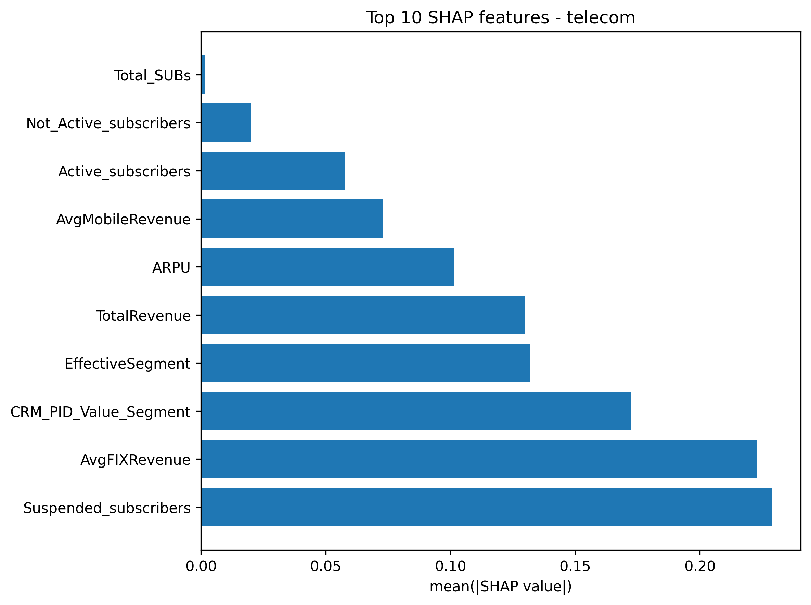
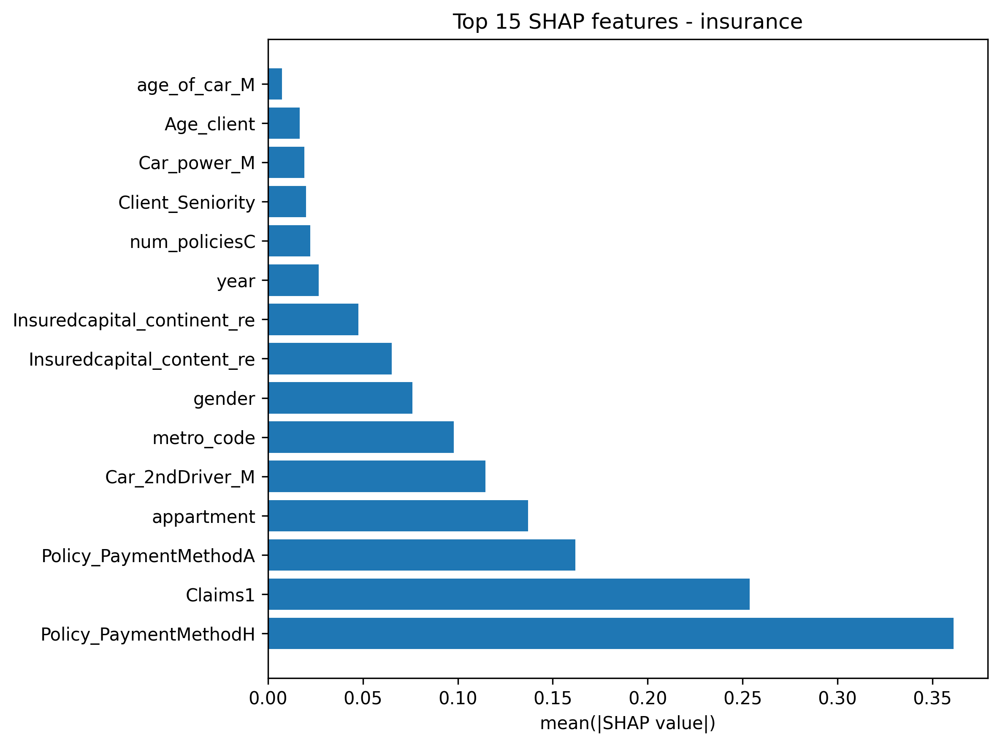

Cross-Industry Churn Prediction
M.Sc. Data Analytics Dissertation
1. Project Overview
This research addresses the “Black Box” problem in predictive modeling. While high-performance algorithms like Gradient Boosting offer superior accuracy, their lack of transparency often hinders business adoption. This project develops an Explainable AI (XAI) framework to predict customer churn in two distinct sectors: Telecommunications and Insurance, providing both high predictive power and actionable insights.
Beyond just training models, this project culminates in a Production-Ready Streamlit Application. This interactive tool allows non-technical stakeholders to upload customer data and receive not just a “Churn/No Churn” prediction, but a transparent breakdown of the specific factors (usage, demographics, or billing) driving that individual customer’s risk score.
2. Research Methodology & Data Pipeline
The project followed a rigorous data science lifecycle to ensure the models were robust and generalized well to unseen data.
Data Preprocessing & Engineering
- Handling Imbalance: Implemented SMOTE (Synthetic Minority Over-sampling Technique) to address the minority churn class.
- Optimization: Utilized GridSearchCV for hyperparameter tuning across all six algorithms.
- Feature Selection: Conducted Recursive Feature Elimination (RFE) to identify the most predictive variables for each industry.
3. Comprehensive Model Performance
I evaluated six diverse algorithms to find the optimal balance between bias and variance. The results below highlight the superiority of Gradient Boosting methods for tabular data.
Comparative Results Table
| Algorithm | Industry | Precision | Recall | F1-Score | ROC-AUC |
|---|---|---|---|---|---|
| CatBoost | Telecom | 0.52 | 0.65 | 0.58 | 0.84 |
| XGBoost | Telecom | 0.49 | 0.64 | 0.56 | 0.83 |
| Random Forest | Telecom | 0.51 | 0.58 | 0.54 | 0.81 |
| SVM | Telecom | 0.45 | 0.55 | 0.49 | 0.78 |
| KNN | Telecom | 0.42 | 0.52 | 0.46 | 0.75 |
| Logistic Regression | Telecom | 0.48 | 0.53 | 0.50 | 0.79 |
| CatBoost | Insurance | 0.41 | 0.48 | 0.44 | 0.79 |
| XGBoost | Insurance | 0.39 | 0.47 | 0.43 | 0.77 |
| Random Forest | Insurance | 0.38 | 0.45 | 0.41 | 0.76 |
| Logistic Regression | Insurance | 0.38 | 0.44 | 0.41 | 0.75 |
Analysis: CatBoost consistently delivered the highest F1-Score and ROC-AUC across both industries. This is attributed to its sophisticated handling of categorical features and its ability to capture non-linear relationships without overfitting.
4. Explainable AI: SHAP Insights
A key finding of this research is that churn drivers are highly sector-dependent. Using SHAP (SHapley Additive exPlanations), we can quantify the average impact of each feature on the model’s output.


Key Industry Findings:
- Telecommunications: Churn is dominated by Operational Subscription Status.
Suspended_subscribersandAvgFIXRevenueare the most critical predictors, suggesting that service interruptions and billing fluctuations are the primary “Red Flags.” - Insurance: Churn is heavily tied to Financial Logistics and Claims. The
Policy_PaymentMethodHandClaims1history are the strongest indicators, showing that how a customer pays and their recent claim experience dictate their loyalty more than demographic factors like age.
5. Web Application
To bridge the gap between academic research and business utility, the final models were deployed as a high-performance Streamlit web application. This tool serves as a sandbox for stakeholders to interact with the underlying machine learning logic.
6. Business Impact & Recommendations
- Precision-Targeting: By using the model’s risk scores, marketing teams can focus retention budgets on the top 10% of at-risk customers, potentially saving millions in lost revenue.
- Proactive Engagement: Insurance providers can trigger a “Loyalty Review” for customers who fit the demographic profile of high-risk churners identified by the model.
Download the full 60-page dissertation and the complete project environment (including model weights and preprocessors) below.